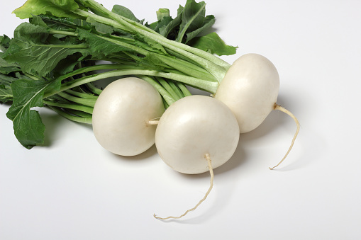

1. Seasons for Growing Turnip

Turnips are cool-season crops that thrive in moderate temperatures. Here’s how to manage its growing seasons:
- Spring: Turnips can be planted in early spring as soon as the soil is workable.
- Summer: Plant in mid-summer for a fall harvest. Turnips grow best in cooler temperatures.
- Fall: Turnips can be harvested in late fall. They can tolerate light frost which can improve their flavor.